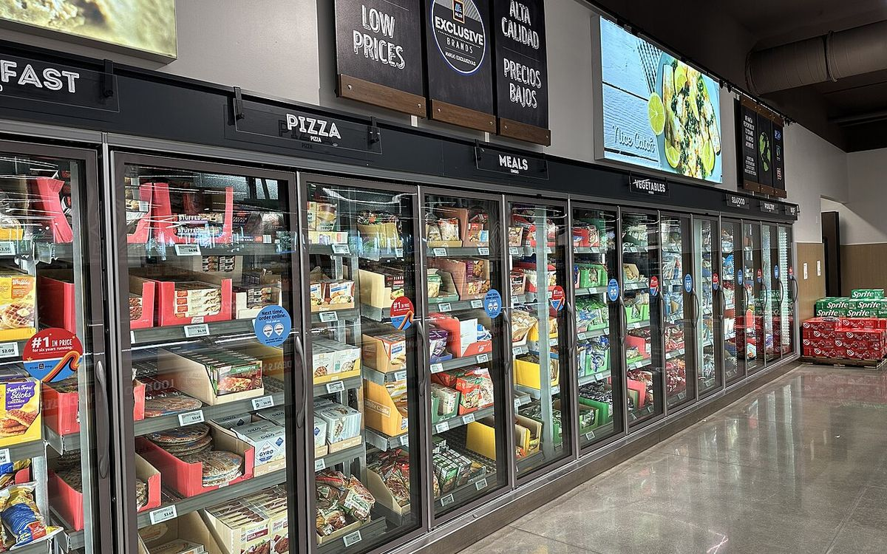

The creator’s process
The complete blogging workflow.
Carry one real post from an initial idea through research, drafting, editing and publication.
Read the guideIn focus / AI content creation
The tools are changing. Good judgment still matters. Explore AI creation, understand the software, and turn a first draft into work worth publishing.
Recent stories from our desk.
The context behind the headline.

security
security

AI & creation
AI & creation
AI & creation
platforms
Publication dates shown above. Each story includes its original sources and full image credits. Browse the complete news archive ↗
Inside the creator’s process
A useful article needs more than a prompt. See how to check claims, find the human voice and turn an AI draft into a considered piece of work.
See the editing processPractical guides for the work
between an idea and a published page.
The creator’s process
Carry one real post from an initial idea through research, drafting, editing and publication.
Read the guideThe creator’s process
Build a claim sheet and an outline around primary sources before writing your draft.
Read the guideThe creator’s process
A real before and after, with separate editing passes and the reasons behind each change.
Read the guideA little more clarity
Add your software subscriptions. See your monthly and annual totals in one place, with the numbers kept in your browser.
Try the free calculatorChoose with intent
Explore the software directory and our SaaS guides before adding another subscription to your stack.
Explore the directoryFind a guide, a story or your next useful tool.